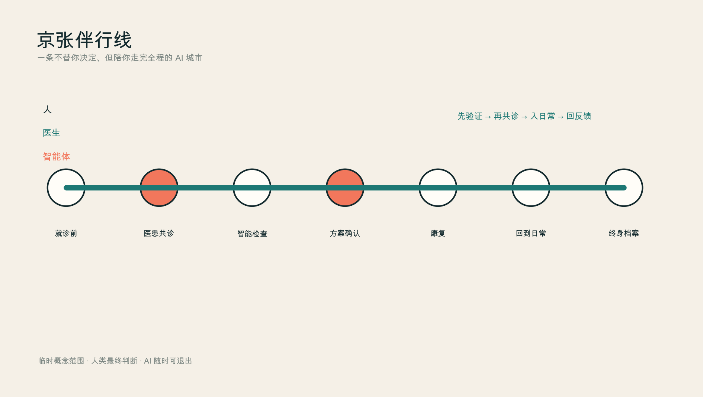
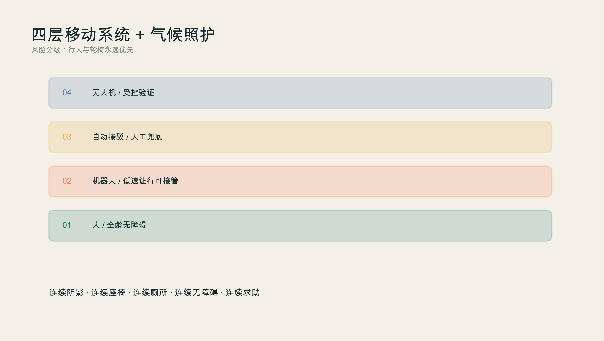
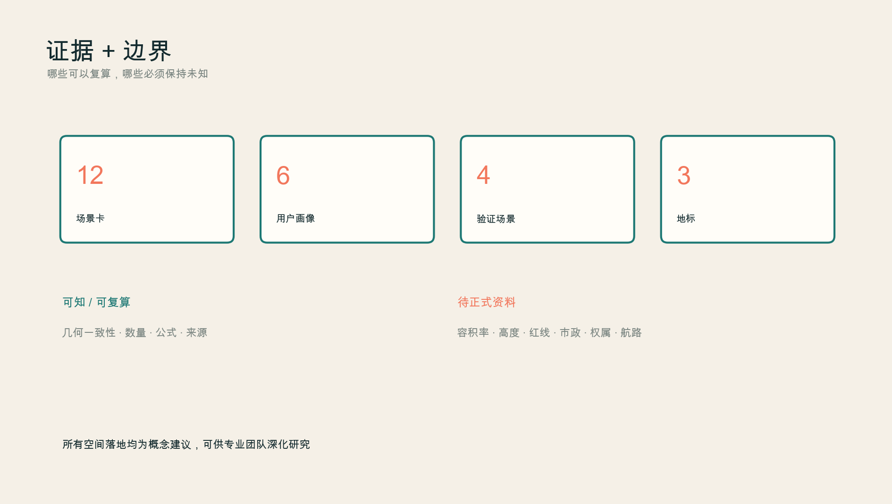

京张伴行线
一条不替你决定、但陪你走完全程的 AI 城市
临时概念方案——不构成正式规划、临床服务或政府审定
先验证 → 再共诊 → 入日常 → 回反馈
总览地图 · 三层范围 · 重点区域 · 用地分区 · 交通慢行 · 蓝绿公共空间 · 建筑 · 更新项目 · AI 场景 · 核心指标 · 任务覆盖 · 自检状态 · 来源 · 假设

众智园·伴行验证花园
医疗AI、机器人、接驳与低空物流的分级验证。
AI原点·医患共诊公地
从就诊前到康复随访的不丢上下文服务链。
大钟寺·健康生活客厅
文化、运动、无障碍与社交共同构成康复日常。
11412825.386site m²
0.156green ratio
0.023public-space ratio

人类最终判断 · 最小必要数据 · 责任可见 · AI可撤回 · 无AI等价路径
